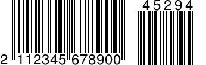

Scan Add-On/Extension Codes
Note
Add-on codes are only supported in BarcodeCapture.
The Scandit Data Capture SDK supports add-on codes (also known as Extension Codes) for EAN-8, EAN-13, UPC-A and UPC-E codes. These codes encode additional product data like an issue number, date or price. There is a two and a five digit version. This guide will show you how to enable and read out add-on codes.

|
 |
Before you start…
To get the most out of this guide, we recommend that you have read the following articles:
Enabling Add-On Codes
Add-ons are handled through symbology extensions. To scan add-on codes:
Enable the main symbologies that should be scanned (EAN-8, EAN-13, UPC-A and UPC-E).
For each main symbology enable the wanted add-on symbology extension(s). The two add-on extensions are:
two_digit_add_on
five_digit_add_on
The following lines of code show you how this is done to enable the two digit add-on for EAN-13, UPC-A and the five digit add-on for EAN-8 while UPC-E is not expecting any add-ons:
var settings = BarcodeCaptureSettings();;
var ean13upcaSettings = settings.settingsForSymbology(Symbology.ean13Upca)
..isEnabled = true
..setExtensionEnabled("two_digit_add_on", enabled: true);
var ean8Settings = settings.settingsForSymbology(Symbology.ean8)
..isEnabled = true
..setExtensionEnabled("two_digit_add_on", enabled: true);
settings.enableSymbology(Symbology.upce, true)
Note
Enabling add-on codes will slow down the recognition of non-add-on codes slightly because the Scandit Data Capture SDK needs to make absolutely sure that no add-on code was missed. If you are not expecting add-on codes for a certain symbology then don’t enable them.
Reading Add-On Code Data
When add-on codes are enabled the Scandit Data Capture SDK automatically couples the add-ons to the main code and returns the add-on’s data through Barcode.addOnData. There are two potential cases when a barcode of a symbology with enabled add-on extension is returned:
The barcode has an add-on and is returned with add-on data
The barcode does not have an add-on and is returned without add-on data
Inside BarcodeCaptureListener.didScan() the data can be retrieved from the recognized barcode as follows:
var barcode = session.newlyRecognizedBarcodes.first;
var data = barcode.data;
var addOnData = barcode.addOnData;
if (addOnData.isNotEmpty) {
// Do something with the data & addOnData.
} else {
// Do something with just the data.
}
Avoiding the Scanning of Barcodes without Add-On
For a use-case where only barcodes with add-ons should be scanned, the same type of rejection as shown in the Barcode Capture Reject Sample can be used.
If add-on data is available:
Manually emit feedback
Change the overlay’s brush to the default
If no add-on data is available:
Don’t emit any feedback
Change the overlay’s brush to transparent